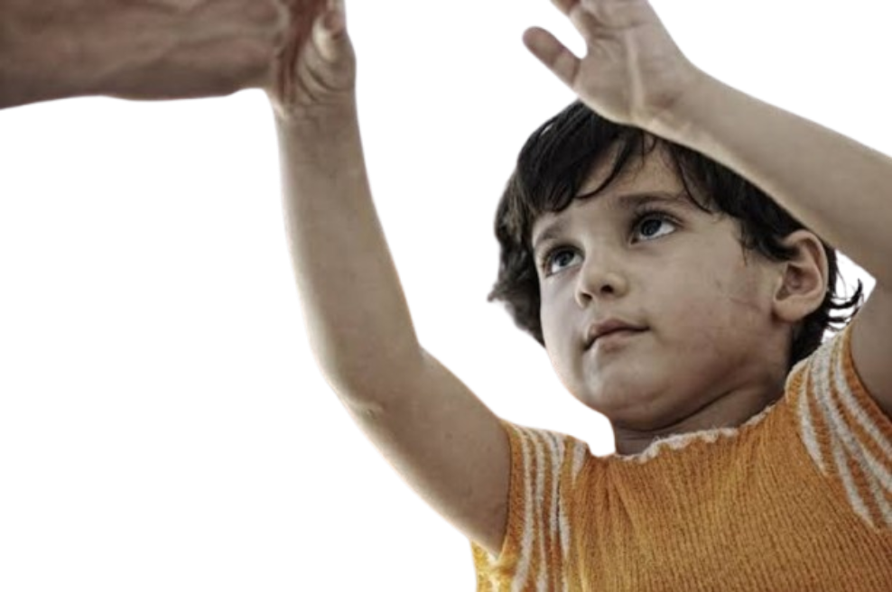
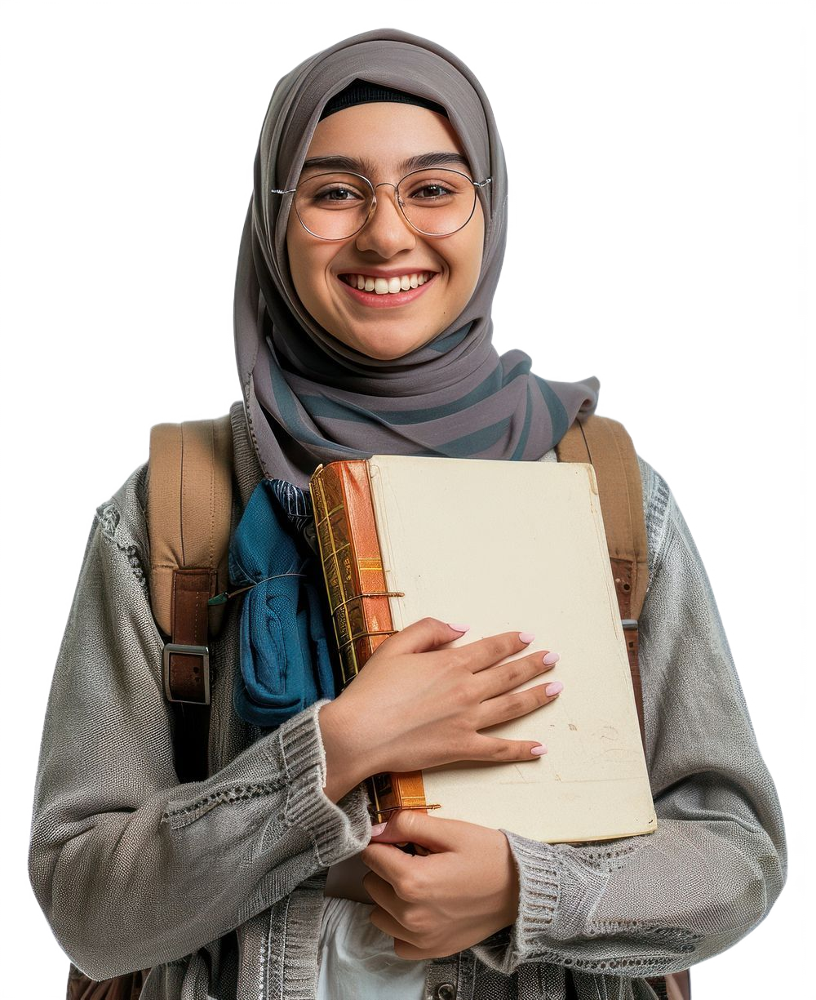
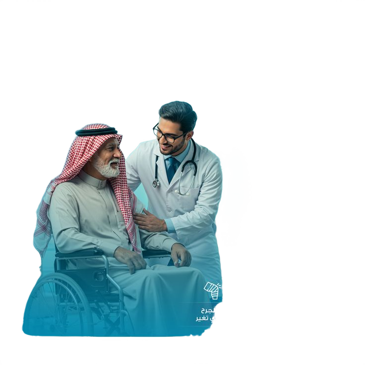
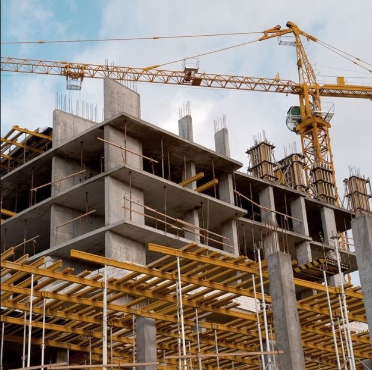

اعمالنا
المؤسسة تعمل مباشرةً من خلال مكاتبها وفروعها المنتشرة في أنحاء الجمهورية وكذا من خلال الجمعيات والمنظمات الشريكة في مجالات تنمية الشباب، التعليم، الصحة، سبل كسب العيش والاحتياجات الأساسية والبيئة.
المؤسسة قائمة على التطوع وتعمل منذ نشأتها على تنمية الشباب لبناء قدراتهم من أجل العمل على تنمية المجتمعات والاستجابة لاحتياجاتهم الإنسانية والإغاثية.
تتبني المؤسسة مبادئ العمل الإنساني الأساسية: الإنسانية والحيادية والعمل طبقا للاحتياج والاستقلالية، في جميع الأعمال التي تقوم بها وذلك للتأكد من أن تقديم المساعدات يتم دون التمييز طبقا للعرق، الدين، النوع أو أي اعتبارات أخري، تقدم مؤسسة صناع الحياة التدخلات الإنسانية والتنموية لمستفيدين الأكثر احتياجات مع الحفاظ على كرامتهم والتأكد من مشاركتهم.

برامج اعمالنا
كفالة

التعليم

الصحة

الاغاثة
البناء
